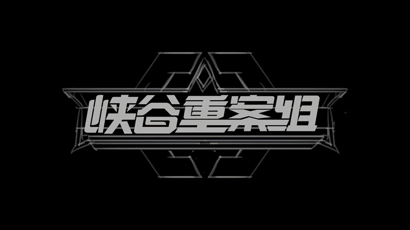
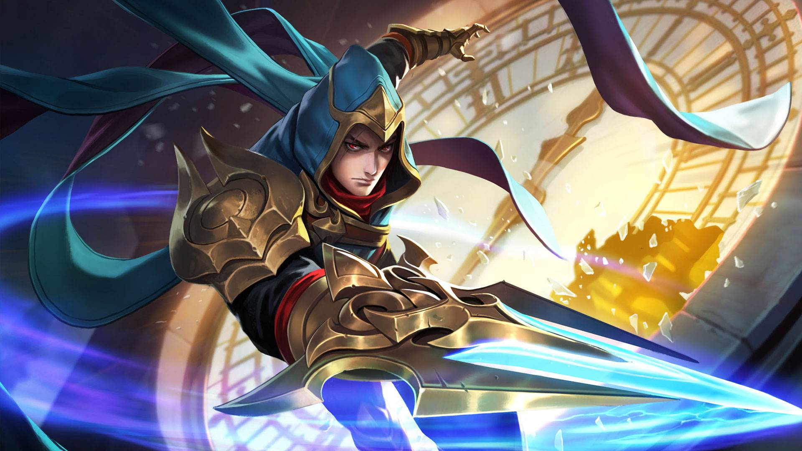
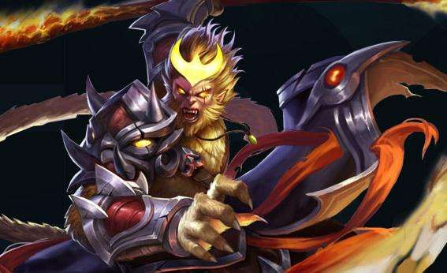
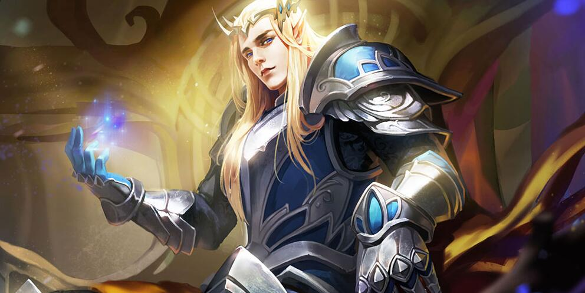

英雄属性介绍
往下滑动
往下滑动

兰陵王
主二副一，有大点大。技能的隐身、位移能力则让他更容易的切入敌人后排，也更容易逃生。对低血量单位具有额外伤害，这让在和残血敌人对拼时具有更高的爆发力。重做后隐身更强，收割能力更强！

孙悟空
前期小打野刀出门（可不升级）提高刷野能力，接着出无尽+鞋子，猴子的核心装备，灵活游走配合线上队友抓人；中期宗师+泣血提升猴子的输出和续航能力；后期破甲弓+破军.伤害爆炸见人就秒。
貂蝉
主一副二，有大点大！团战是个收割角色，尽量猥琐，一定不要吃第一波控制，最好是远程消耗，一旦团战开打，后撤一点找安全位置，不要被第一波技能控制主，选择召唤师技能防护，可以比较好躲避技能。

后裔
出装思路：比较传统的出装，当然也是十分的暴力和实用。无尽战刃和末世是不能少的，后羿主要靠平A输出伤害，末世提供一定的攻速，无尽提供暴击